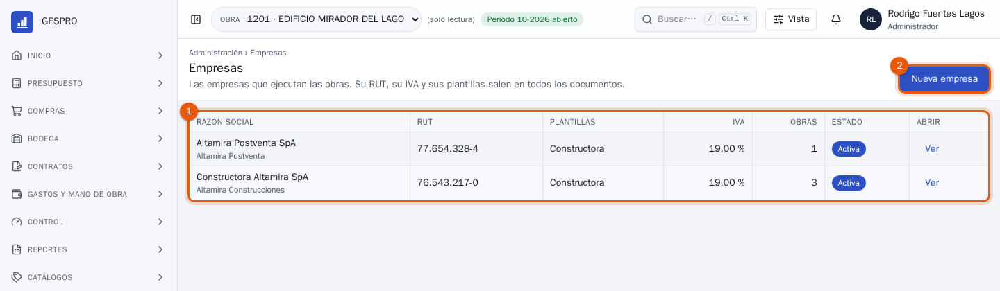
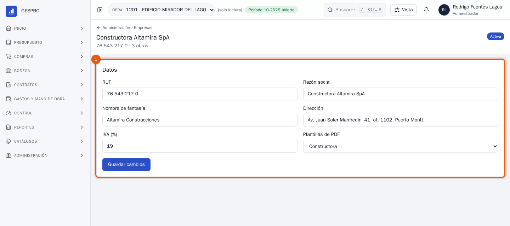
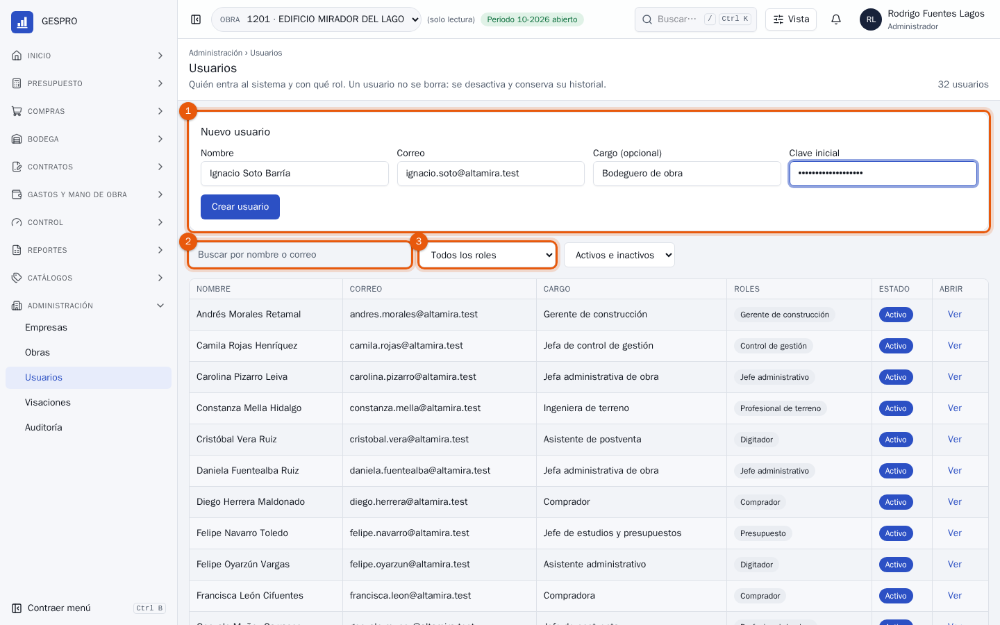
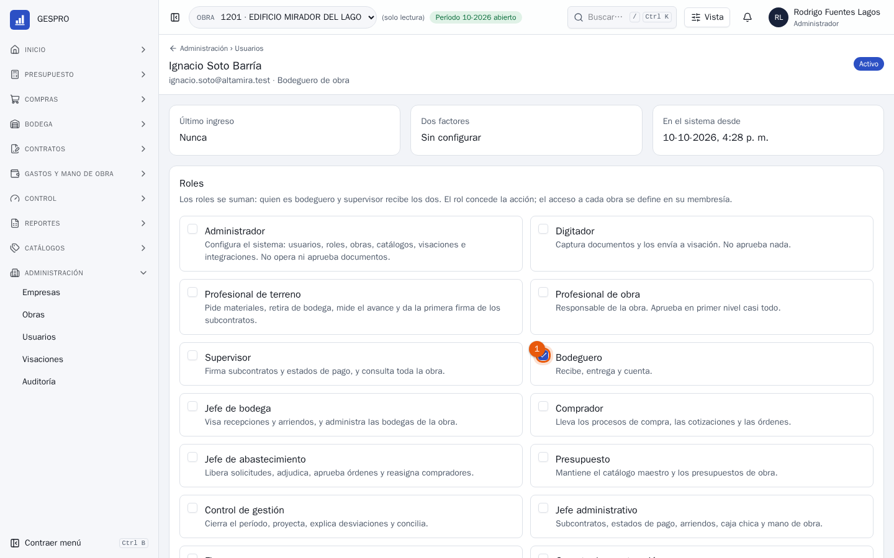
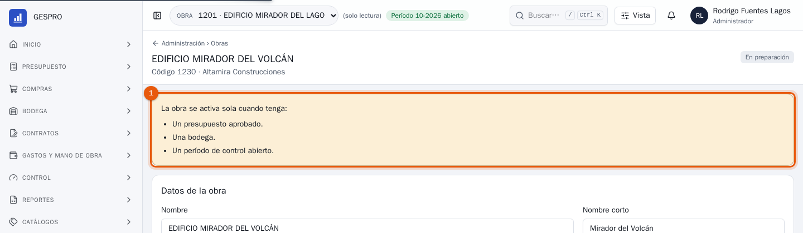
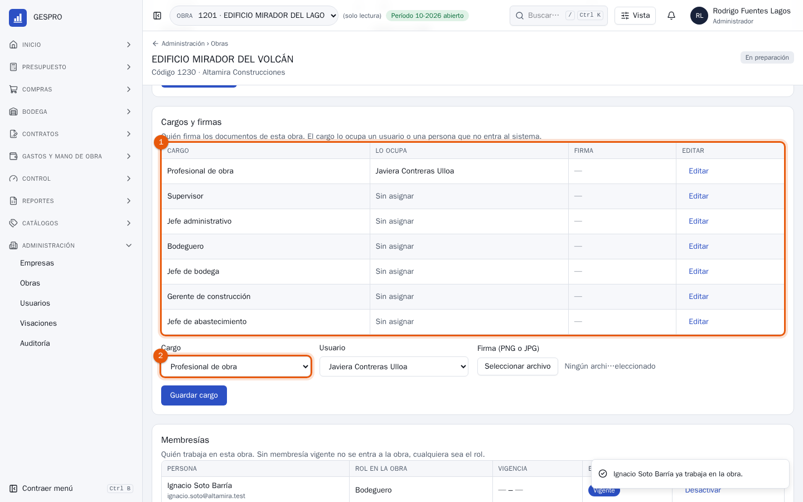
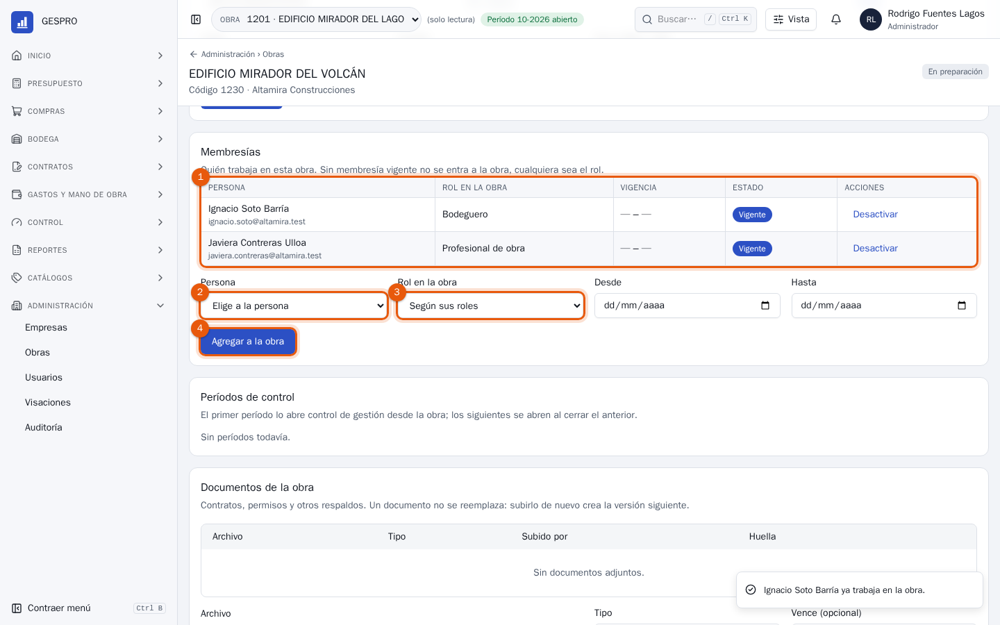
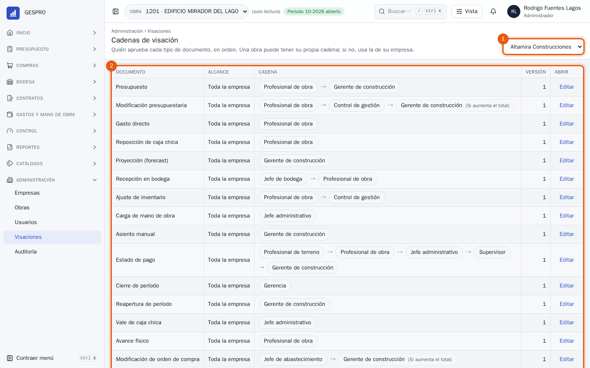
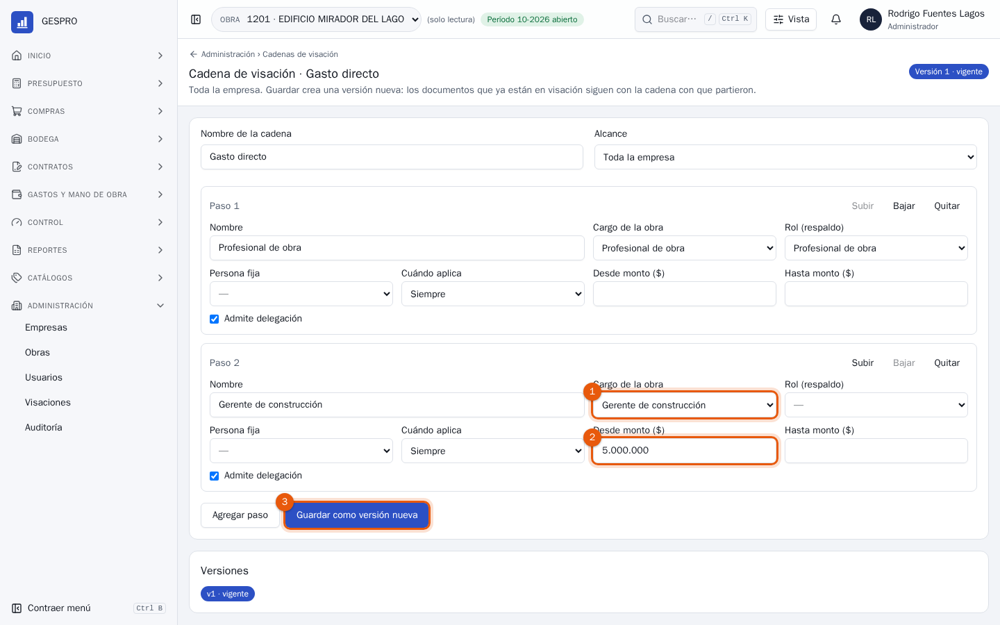

Manual de usuario
Administrador en GESPRO
Para quien configura GESPRO en la empresa: las empresas del holding, las personas y sus roles, las obras con sus cargos y su gente, y las cadenas que deciden quién aprueba cada documento.
- Rol en GESPRO
- Administrador
- Sus pantallas
- Administración › Empresas · Obras · Usuarios · Visaciones · Auditoría
- Ejemplos con
- Rodrigo Fuentes · holding Altamira
1Lo que hace el administrador
El administrador deja todo listo para que la obra trabaje, pero no opera ni aprueba documentos: ve todas las obras, en solo lectura. Lo que configura decide quién puede hacer qué y quién firma. Los pasos destacados son los de este manual.
- EmpresaRUT, IVA y plantillas de PDF.
- PersonasUsuarios y roles.
- ObraCargos y membresías.
- CadenasQuién aprueba cada documento.
- La obra se activaCon presupuesto, bodega y período.
| Concepto | Qué decide |
|---|---|
| Rol | Qué acciones puede hacer la persona. Los roles se suman. |
| Membresía | En qué obra, con qué rol y desde cuándo hasta cuándo. Sin membresía vigente no se entra a la obra. |
| Cargo | Quién firma los documentos de la obra: el profesional de obra, el supervisor, el jefe administrativo y los demás. Su firma sale en los PDF. |
| Cadena de visación | Los pasos, en orden, por los que pasa cada tipo de documento antes de aprobarse. |
2Las empresas
En Administración › Empresas están las empresas del holding. Cada obra pertenece a una, y sus datos salen en todos los documentos.

- Las empresas, con su RUT, sus plantillas, su IVA y cuántas obras tienen.
- Nueva empresa, para sumar otra razón social al holding.

- Los datos de la empresa: el RUT, la razón social, el nombre de fantasía, la dirección, el IVA y las plantillas con que se imprimen sus PDF.
3Las personas y sus roles
En Administración › Usuarios se da de alta a quien entra a GESPRO. Aquí, Ignacio Soto, el bodeguero de la obra nueva.

- Nuevo usuario: nombre, correo, cargo y una clave inicial, que se le entrega a la persona. Crear usuario abre su ficha.
- Buscar por nombre o correo.
- Filtrar por rol o por estado.

- Los roles, cada uno con lo que permite. Se suman: quien es bodeguero y supervisor recibe los dos.
- Guardar roles. Arriba, cuándo entró por última vez y si configuró los dos factores; algunos roles los exigen.
Para tener en cuentaUn usuario no se borra: se desactiva, con motivo, y conserva su historia. Todo lo que firmó sigue a su nombre.
4Preparar una obra
En Administración › Obras, Nueva obra la crea con su código, su empresa, sus fechas y su control presupuestario. Nace en preparación.

- Lo que le falta: un presupuesto aprobado, una bodega y un período de control abierto. Cuando los tiene, se activa sola.

- Los cargos: quién ocupa cada uno y su firma.
- Asignar un cargo: el cargo, la persona y su firma en PNG o JPG, que sale en los PDF. Un cargo lo puede ocupar alguien que no entra al sistema.

- Quién trabaja en la obra, con su rol en ella y su vigencia.
- La persona.
- Su rol en la obra: según sus roles, o uno en particular.
- Agregar a la obra. Con Desde y Hasta, la membresía vence sola: sirve para un reemplazo o una visita.
5Las cadenas de visación
En Administración › Visaciones está la cadena de cada tipo de documento. Una obra puede tener la suya; si no, usa la de su empresa.

- La empresa cuyas cadenas se ven.
- Las cadenas: el documento, a qué alcanza, sus pasos en orden y su versión. Editar abre una.
Aquí, los gastos directos de cinco millones o más pasan además por el gerente de construcción.

- Quién firma el paso: un cargo de la obra, con un rol de respaldo si el cargo está vacío, o una persona fija.
- Desde qué monto aplica. También se puede limitar con Hasta monto o con Cuándo aplica.
- Guardar como versión nueva. Los documentos que ya están en visación siguen con la cadena con que partieron.
6Preguntas frecuentes
¿Por qué el administrador ve las obras en solo lectura?
Así lo define su rol: configura el sistema, pero no opera ni aprueba documentos. Para operar en una obra hace falta otro rol y una membresía en ella.
Alguien dejó la empresa.
Desactiva su usuario con el motivo: ya no entra, y lo que firmó queda en la historia. Si ocupaba un cargo, asigna a quien lo reemplaza.
Una persona ve una obra que no debería.
Revisa sus membresías en la ficha de esa obra: el rol da la acción, la membresía da el acceso. Desactívala ahí.
¿Dónde veo quién cambió algo?
En Administración › Auditoría, con filtros por obra, documento, acción y fechas. La ficha de cada obra muestra lo último y enlaza a su historia completa.